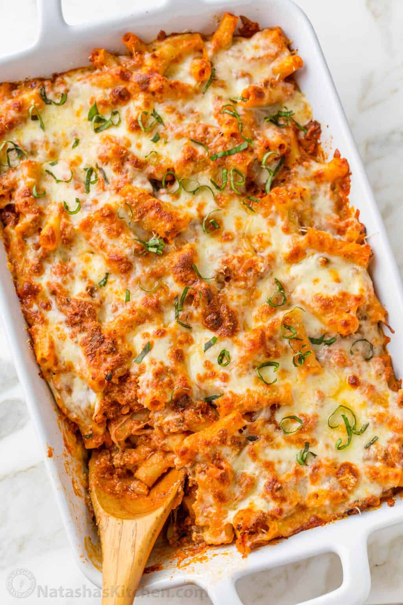

Baked Ziti

Description
Baked Ziti is an Italian-American casserole of tubular-shaped ziti
noodles with Marinara Sauce, ricotta, and loads of gooey, melty cheese.
Think of Baked Ziti as a lazy lasagna- it has all the familiar
flavors of Lasagna, without the fuss of layering the noodles.
Ingredients
- 1 lb ziti pasta, or penne pasta or gluten-free pasta
- 1 lb ground beef, 85% lean
- 1 onion, chopped
- 2 garlic cloves, minced
- 1 tsp salt
- 1/2 tsp black pepper
- 5 cups marinara sauce
- 15 oz fresh ricotta
- 10 fresh basil leaves
- 12 oz mozzarella cheese, shredded, divided
- 1 cup grated parmesan cheese, divided
Steps
- Cook pasta in salted water according to package instructions
until just al dente, then drain (do not overcook as the pasta will
continue to cook in the oven).
- In a deep pan or Dutch oven, over medium-high heat, cook ground
beef and onion, breaking up the beef with a spatula, until beef is
fully cooked through and onions are softened (5-7 minutes).
Add minced garlic, salt, pepper, and sauteé for another minute.
Add 5 cups marinara sauce, bring to a simmer, and continue cooking
for 5 minutes then turn off the heat.
- Spread a ladle of meat sauce into the bottom of a 9×13 casserole dish.
- Add chopped basil and spoon in ricotta into the remaining sauce.
Add cooked pasta and stir just until noodles are coated
(you want to keep that ricotta texture)
- Transfer half of the pasta to the casserole dish. Top with 1/2
of the shredded mozzarella and 1/2 of the grated parmesan.
Add the remaining pasta and top with the remaining mozzarella and parmesan.
- Clear the edges of the pan so the cheese doesn’t burn onto the dish.
Bake at 350°F for 25 minutes. Broil for 1-2 minutes to brown the cheese.
Let cool for 5 minutes, then garnish with basil if desired and serve.
Home